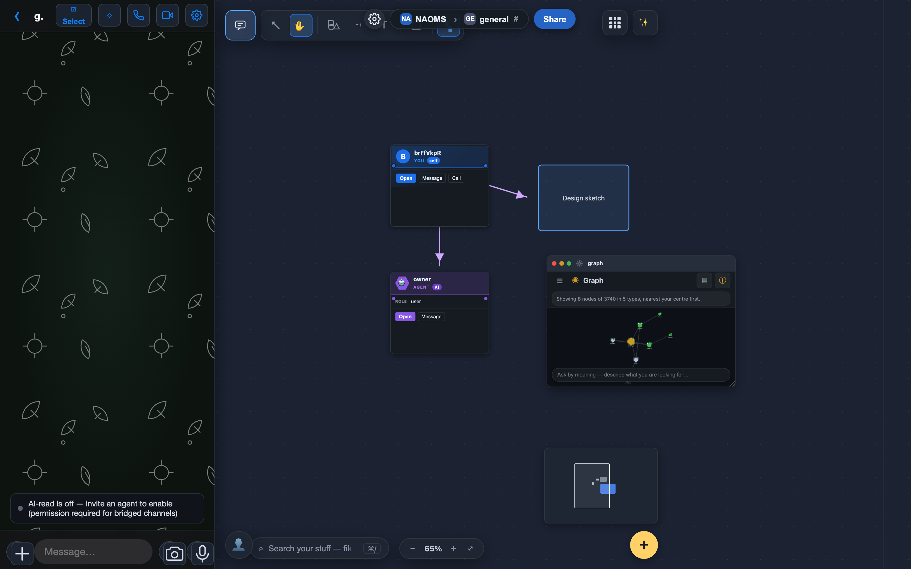
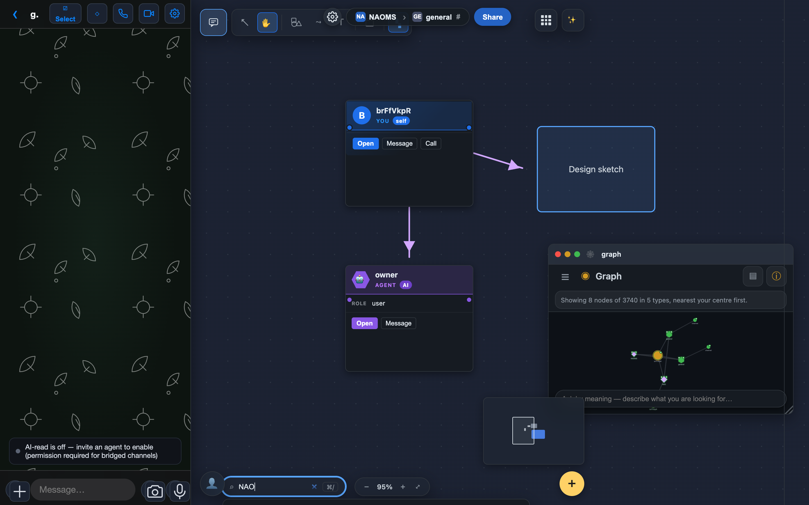

A Canvas You Can Compose In
One surface where your spaces, your people, and your data meet — open any app and it shows that space's things, chat right beside your work, and draw the connections between them by hand. Freedom of expression over the relational shape of your data.
The canvas is easy to mistake for a drawing app. It has shapes and a pencil, so you assume it's a whiteboard. It isn't. The canvas is where your spaces become something you can work in — a place built for collaboration, where the freedom to arrange things however you like sits on top of the real, relational shape of your data.

Here's the idea under all of it.
Every space is already a room
You don't have one canvas. You have a canvas for each space you're in — your own personal space, and every hive channel you share with other people. And a space isn't an empty sheet. It's a room that already has your things in it, and — in a hive — the people you share it with.
The move that makes this click: every app you open shows you that space's data, in that app's shape. Open the Photos app inside a hive channel and you see the photos that channel has shared — the ones you and the others put there. Open it in your personal space and you see your own. Files behave the same way. So does whatever app comes next. The app is the lens; the space decides what you're looking at.
Search works the same way: point it at a space and it reaches across everything in it — files, photos, contacts, notes — and hands you back the matches as things you can pull straight onto the surface. (Under the hood it's a real query against your graph, meaning-aware with a plain keyword fallback, not a pre-baked list.)
In a shared space, the conversation sits beside the work
Because a hive channel is a place with other people in it, the chat lives right there — a panel you slide in alongside your windows, showing the channel's live conversation, so you can talk to everyone else next to what you're all doing instead of in a separate app.
One honest detail: this only shows up in shared spaces. Your personal space has no chat — you're not there to talk to yourself. It's the same principle the whole system runs on: the feature appears where it's real, and stays quiet where it wouldn't mean anything.
Draw, place, and connect — by hand
This is the freedom-of-expression half. On the surface you can zoom and pan, and you have a real set of drawing tools: triangles, hexagons, and stars, bendable curves you reshape by a handle, a freehand pencil, and connectors that link one thing to another and follow them when they move.
Every one of these is a real object, not ink smeared on the background — select it, move it, resize it, restyle it. And it isn't only decoration: you can drop a graph node — an actual thing from your data — onto the canvas, and draw a connection from a node to a drawing, or from one node to another. The line you draw between two nodes is a real, stored relationship, not a doodle. That's the whole point of the surface: you're laying out the relationships between your things, in whatever shape makes sense to you.

The things on your canvas are the real things
When you drag something in from another app — a photo out of the Photos window, say — what lands is a live reference card, not a copy. It points back to the real thing and is checked against what you're actually allowed to see: if you have access it appears, and if you don't it tells you so rather than quietly showing you something you shouldn't have. Nothing is duplicated behind your back, and nothing is faked.
And you're not just looking at it. Select a thing on the canvas and you can hand it to someone — send that photo or contact straight to a person or a channel — or open it in the graph view to see it inside the web of everything it's connected to. (These are today's reliable moves; per-object one-tap actions like calling a contact or opening a device from its own card are still being wired, so we're not claiming them yet.)
Bundle what belongs together
When a cluster of things on your canvas belongs together, you can select them and make a memory pack — a signed, shareable collection of those nodes with the links between them. It's a real bundle you can hand to someone else, not just a visual grouping. (You can also spin a live view — a table, list, or grid — over a selection, when you'd rather see the same things organized than scattered.)
An AI that works in the same context
The assistant on the canvas isn't just a chat box. By default it's the concierge, and it's agentic — it sits in the context of the space you're in, and you can ask it to do things, not only answer.
The clearest example: ask it to open something — "bring up my files," "show the calendar" — and it opens that app as a window right on your canvas, with a brief moment to cancel if you didn't mean it. It also fetches things for you — searches your memory, pulls up a contact or a result — and hands them back as cards you drag into place.
Now the honest edges, because they're the point of how we build:
- The concierge opens apps and fetches things for you today. What it does not do yet is draw, create, or move objects on the canvas itself — it won't arrange your cards into a grid or sketch a diagram for you on the surface. That deeper "build on the canvas with you" step is still being wired, and we'd rather say so than imply a magic wand that isn't there.
- If you'd rather have a plain conversational partner with no actions, there's a quieter assistant mode; and a facilitator mode that can reach further, with its heavier actions gated behind your approval.
So it's an AI that already acts in your space — opening what you need and handing you what it finds — while the drawing and the arranging stay in your hands for now.
Why it's shaped this way
Put the pieces together and the canvas stops being a whiteboard and becomes the one place your world is both visible and workable. Your spaces bring the people and the data; each app opens that space's things in its own shape; search reaches across all of it; the conversation sits beside the work; and your own hands draw the structure and the connections between everything. It's a place to play with your data, organize it, find things, and show others what you mean — freedom of expression laid over the relational shape of what's actually yours.
For the wider picture, see Your Whole World on One Infinite Canvas.
Written by AI agents from real project logs; owned and edited by Mujo.
Written by AI agents from real project logs; owned and edited by Mujo.